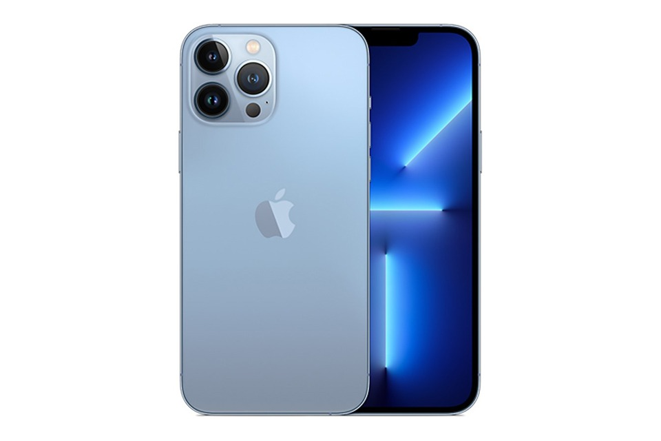
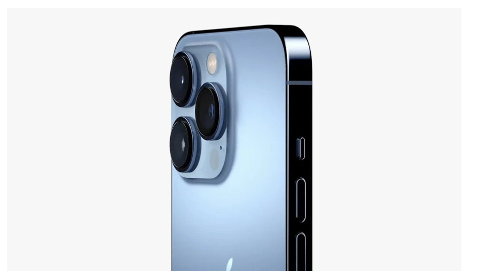
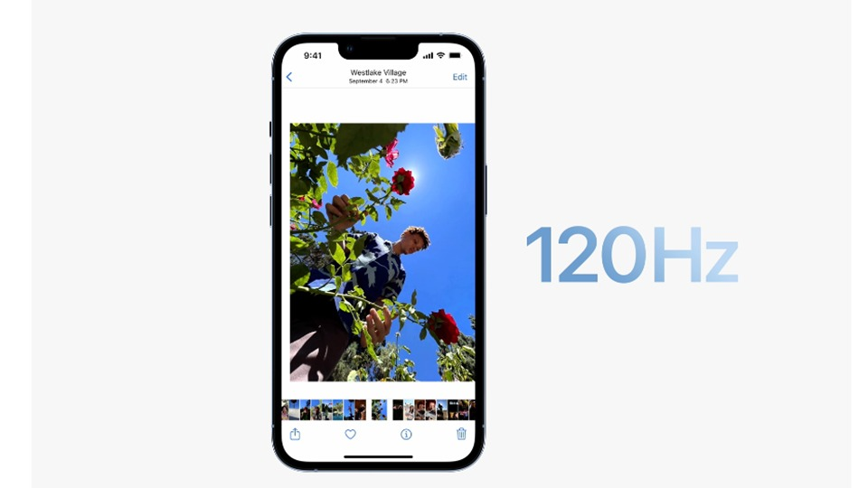

Đặc điểm nổi bật của iPhone 13 Pro Max


Đánh giá chi tiết iPhone 13 Pro Max
iPhone 13 Pro Max xứng đáng là một chiếc iPhone lớn nhất, mạnh mẽ nhất và có thời lượng pin dài nhất từ trước đến nay sẽ cho bạn trải nghiệm tuyệt vời, từ những tác vụ bình thường cho đến các ứng dụng chuyên nghiệp.
Đắm chìm trong không gian màn hình lớn cực đã
Dù là giải trí khi xem phim, chơi game hay kiểm tra email, đọc tài liệu thì màn hình lớn tới 6,7 inch của iPhone 13 Pro Max cũng luôn cho trải nghiệm tuyệt vời nhất.
Không chỉ lớn, đây còn là màn hình chất lượng hàng đầu thế giới smartphone với tấm nền OLED tuyệt đẹp, công nghệ Super Retina XDR siêu nét và độ sáng tối đa đạt mức khó tin, lên tới 1200 nits cho nội dung HDR. Trước mắt bạn là một không gian giải trí mãn nhãn, một thiết bị di động lý tưởng để giải quyết nhanh công việc với màn hình thực sự xuất sắc.
iPhone 13 Pro Max xanh lá sang trọng, bí ẩn
iPhone 13 Pro Max giờ đây đã khoác lên màu xanh lá Alpine Green bí ẩn mà không kém phần sang trọng. Sắc màu mới đem lại cảm nhận mới mẻ mà giúp bạn có thêm nhiều lựa chọn khi sắm sửa cho bản thân một chiếc iPhone cao cấp thế hệ mới. Cầm iPhone 13 Pro Max màu xanh lá trên tay, bạn sẽ có cảm giác như đang sử dụng phiên bản giới hạn của sản phẩm này.
Bước nhảy vọt về thời lượng pin
Dòng iPhone Pro Max luôn được người dùng yêu thích nhờ thời lượng pin siêu dài, tuy nhiên iPhone 13 Pro Max còn làm được nhiều hơn thế. Dung lượng pin lớn hơn, màn hình mới và bộ vi xử lý Apple A15 Bionic tiết kiệm điện hơn giúp iPhone 13 Pro Max trở thành chiếc iPhone có thời lượng pin tốt nhất từ trước đến nay.
So với iPhone 12 Pro Max, iPhone 13 Pro Max có thời gian sử dụng dài hơn 2,5 giờ. Bạn sẽ cảm nhận rõ sự khác biệt khi sử dụng thực tế, thời lượng pin iPhone 13 Pro Max thậm chí còn có thể kéo dài đến ngày thứ 3 với nhu cầu sử dụng thông thường.
Sang trọng, lịch lãm và quý phái
iPhone 13 Pro Max có kiểu dáng sang trọng, thời thượng và sự tinh xảo đến từng đường nét. Phần khung máy cứng cáp làm từ thép không gỉ nằm giữa hai mặt kính cao cấp, trong đó phần kính bảo vệ màn hình có chất liệu gốm siêu cứng, iPhone 13 Pro Max vừa tuyệt đẹp, lại vừa vô cùng bền bỉ.
Hơn nữa, điện thoại còn có khả năng chống nước chuẩn IP68, cho phép bạn sử dụng mà không sợ các nguy cơ như đổ nước hay gặp trời mưa. Sẽ có 4 lựa chọn màu sắc dành cho iPhone 13 Pro Max là Xám, Vàng, Trắng và Xanh Sierra, tất cả các màu đều có khí chất riêng biệt, đẳng cấp.
Sức mạnh của hệ thống camera Pro mới
Cả 3 camera trên iPhone 13 Pro Max đều sử dụng cảm biến mới với chất lượng ống kính hàng đầu hiện nay. Nổi bật nhất là camera chính có khẩu độ lên tới f/1.5, kích thước điểm ảnh 1.9um, những con số khó tin đối với một chiếc điện thoại di động, cho hình ảnh và video thiếu sáng tốt hơn bao giờ hết.
Camera góc siêu rộng cũng được nâng cấp với khẩu độ f/1.8, cảm biến nhanh hơn, mang tới những bức ảnh góc siêu rộng tự nhiên và chân thực. Cuối cùng là camera Tele hỗ trợ zoom quang học 3x. Đặc biệt, hệ thống chống rung quang học kép có mặt trên cả camera chính và camera Tele.
Điện thoại đầu tiên trên thế giới có khả năng quay video macro
Camera góc siêu rộng của iPhone 13 Pro Max không chỉ chụp được những hình ảnh khung hình rộng mà còn có khả năng lấy nét ở khoảng cách chỉ 2cm, mang đến tính năng macro đầy thú vị. Bạn có thể nhìn rõ từng chi tiết nhỏ như nhụy hoa, côn trùng, đồng xu, mặt đồng hồ,...
Ấn tượng hơn nữa khi iPhone 13 Pro Max còn có thể quay video macro, để bạn có những thước phim như chương trình truyền hình Discovery, lưu lại cảnh thiên nhiên ở góc nhìn gần nhất.
Chụp đêm sáng rõ như ban ngày
iPhone 13 Pro Max hội tụ đủ những yếu tố để trở thành chiếc điện thoại chụp đêm xuất sắc nhất hiện nay. Khẩu độ và kích thước cảm biến siêu lớn; máy quét LiDAR chuyên dụng đi cùng chip xử lý hình ảnh ISP mới tích hợp trên Apple A15 Bionic và thuật toán phần mềm thông minh giúp thu sáng tốt hơn tới 2,2 lần ở camera chính, hơn 92% ở camera góc siêu rộng. Hơn nữa, tất cả các camera trên iPhone 13 Pro Max đều có chế độ chụp đêm, cho hình ảnh luôn rõ nét trong đêm tối.
Điều kỳ diệu từ camera Tele
Camera Tele chỉ có mặt trên dòng iPhone Pro. Với iPhone 13 Pro Max, camera Tele có thể zoom quang học 3x, phóng to hình ảnh và video gấp 3 lần nhưng vẫn giữ nguyên chất lượng. Camera Tele còn tham gia vào tính năng chụp ảnh chân dung xóa phông, cho khả năng tách phông nền mượt mà, nổi bật chủ thể một cách tự nhiên, chế độ chân dung đêm độc đáo. Các hiệu ứng ánh sáng chuẩn studio có sẵn còn làm bức ảnh của bạn trở nên nghệ thuật hơn.
Chế độ quay video xóa phông điện ảnh Cinematic
Giờ đây bạn đã có thể sáng tạo những thước phim chất lượng tương đương các bom tấn điện ảnh trên chiếc điện thoại iPhone 13 Pro Max. Chế độ quay phim điện ảnh Cinemactic có thể lấy nét vào chủ thể, đồng thời làm mờ hậu cảnh và những nhân vật khác trong khung hình. Thậm chí cả trong và sau khi quay, bạn còn có thể đổi chủ thể lấy nét một cách dễ dàng. Hiệu ứng chiều sâu cùng hình ảnh nổi bật tạo thành những đoạn video đầy thú vị và sống động.
Nhiếp ảnh chưa bao giờ dễ dàng đến thế
Ngoài việc chụp ảnh sắc nét, iPhone 13 Pro Max còn có những công cụ chỉnh sửa ảnh đơn giản và hiệu quả. Trên điện thoại có sẵn rất nhiều bộ lọc màu, đơn giản bạn chỉ cần vuốt để xem trước và áp dụng những bộ lọc màu khác nhau để có được bức ảnh đúng như ý muốn. Dù là chỉnh sửa đơn giản hay chuyên sâu, điện thoại cũng đáp ứng một cách hoàn hảo để bạn tận hưởng cảm giác như là một nhiếp ảnh gia chuyên nghiệp.
Quay, dựng, biên tập video ProRes
Bạn có thể sản xuất những bộ phim hay dự án điện ảnh chỉ bằng chiếc iPhone 13 Pro Max. Phần cứng mạnh mẽ, ống kính camera hàng đầu, nhiều tính năng và chế độ ProRes hoàn toàn mới cho phép bạn quay, dựng, biên tập video hiệu quả. Chế độ ProRes với nhiều thiết lập chuyên sâu, có thể chỉnh sửa ở ứng dụng Final Cut Pro trên máy tính Mac, tạo nên những thước phim chất lượng đáng kinh ngạc.
Selfie đẳng cấp Pro Max
Không chỉ đơn thuần đóng vai trò selfie, camera trước của iPhone 13 Pro Max còn tích hợp đầy đủ những tính năng cao cấp có mặt trên camera chính. Bạn có thể chụp ảnh chân dung xóa phông, chế độ chụp đêm, Smart HDR 4, Apple ProRAW, quay video 4K HDR Dolby Vison, chế độ điện ảnh Cinematic, video ProRes trên camera trước độ phân giải 12MP. Cũng không thể không nhắc đến tính năng nhận diện khuôn mặt Face ID an toàn và tiện lợi bậc nhất thế giới smartphone.
Cảm nhận độ mượt trên từng ngón tay
iPhone 13 Pro Max lần đầu tiên trình diễn màn hình ProMotion 120Hz siêu mượt với tốc độ làm tươi nhanh gấp đôi các thế hệ trước. Tất cả những gì trên điện thoại, từ hiệu ứng chuyển cảnh cho đến thao tác vuốt chạm đều mượt mà hơn bao giờ hết.
Bạn có thể cảm nhận rõ rệt kể cả khi sử dụng những tác vụ thông thường hay chơi game nặng. Thậm chí màn hình iPhone 13 Pro Max còn tự động điều chỉnh tần số quét linh hoạt từ 10 đến 120Hz dựa theo tác vụ bạn đang sử dụng, hiệu ứng chuyển cảnh dựa theo tốc độ ngón tay cuộn trang của bạn để mọi thứ mượt mà đến khó tin.
Hiệu năng không đối thủ
Apple A14 Bionic cho đến nay vẫn là con chip mạnh nhất thế giới smartphone, vì thế bạn có thể hình dung được Apple A15 Bionic trên iPhone 13 Pro Max với những nâng cấp đột phá mạnh mẽ đến mức nào. So với các đối thủ hiện tại trên thị trường, iPhone 13 Pro Max mạnh hơn về 50% ở cả CPU và GPU, mọi tác vụ phức tạp đều được xử lý trong chớp mắt, mọi game nặng đều được tái hiện với đồ họa sống động và mượt mà.
Không chỉ mang đến tốc độ cao, Apple A15 Bionic còn tích hợp bộ xử lý hình ảnh mới ISP; bảo mật an toàn dữ liệu Face ID, các thông tin cá nhân; hỗ trợ trí tuệ nhân tạo với 15,8 nghìn tỉ phép tính mỗi giây, cho phép chạy các tính năng như Cinematic hay Smart HDR 4 trơn tru và ổn định.

Tốc độ mạng 5G nhanh nhất
Thêm một cái nhất nữa dành cho iPhone 13 Pro Max, đây là chiếc điện thoại có tốc độ mạng 5G nhanh nhất thế giới hiện tại. Với việc trang bị nhiều băng tần 5G, tương thích với nhiều nhà mạng ở các quốc gia khác nhau, iPhone 13 Pro Max luôn cho tốc độ mạng tối đa. Bạn có thể xem phim 4K mượt mà, tải tệp tin trong chớp mắt, chơi game online không độ trễ ở bất cứ đâu.
Thông số kỹ thuật
Màn hình
6.7 inch, OLED, Super Retina XDR, 2778 x 1284 Pixels
Camera sau
12.0 MP + 12.0 MP + 12.0 MP
Camera Selfie
12.0 MP
RAM
6 GB
Bộ nhớ trong
128 GB
CPU
Apple A15 Bionic
GPU
Apple GPU 5 nhân
Dung lượng pin
4352 mAh
Thẻ sim
1 - 1 eSIM, 1 Nano SIM
Hệ điều hành
iOS 15
Xuất xứ
Trung Quốc
Thời gian ra mắt
09/2021
Tin tức về iPhone 13 Pro Max
Apple tăng cường sản xuất dòng iPhone 13 Pro vì quá “hot”
FPT Shop giảm đến 6 triệu, nhân đôi bảo hành khi đặt trước iPhone 13 Series Xanh lá mới
iPhone 13 Pro Max màu Xanh lá mới sẽ được mở bán sớm nhất tại FPT Shop, giá không đổi
Mừng sinh nhật 10 tuổi, FPT Shop giảm đến 6,5 triệu, nhân đôi bảo hành cho iPhone 13 Series
Đọ tốc độ Samsung Galaxy S22 Ultra và iPhone 13 Pro Max